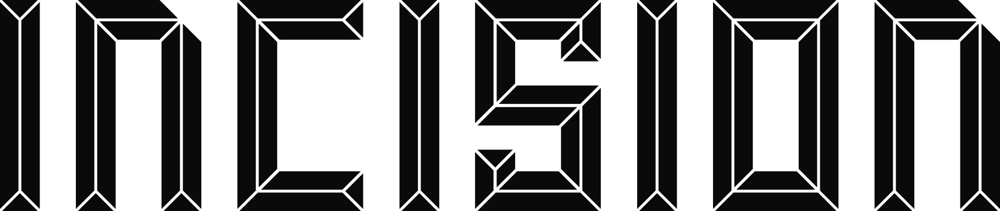

[.COMPOSANTS] [.JETONS] [.SOURCE DE VÉRITÉ POUR LE CODE]
La boîte à outils
Couleurs
Abysse
--abysse #05070D · fondNuit
--nuit #0C1424 · surfaceMer
--mer #0B1A30 · pisteSillage
--sillage #16233A · séparateurHoule
--houle #22324D · bordureBrume
--brume #8A9BB5 · texte 2Embrun
--embrun #C9D3E1 · texte 1bÉcume
--ecume #EEF2F7 · texteRed Line
--redline #BC0404 · logo seulAction
--action #D41F27 · bouton 1Ligne rouge
--ligne #EB3B44 · trait, arrivéeMoi
--moi #5BD6FF · focus, moiOr
--or #FFB347 · 1er, recordJuste
--juste #5BE3A6 · correct, prêtArcade
--arcade #B48CFF · bonusErreur
--erreur-fond #3A1219 / --erreur #FF8A90Typographie
TITRE · BIG SHOULDERS 900 · MAJ · 1 MOT EN SERIF
Tape. Dépasse. arrive.
CHIFFRE · BIG SHOULDERS 800 · 40–48 PX
47 WPM
AMBIANCE · INSTRUMENT SERIF · HORS INTERFACE
Place tes doigts. La route s'ouvre.
CORPS · GEIST 400 · 16 PX · 1,5
Finisseurs classés au WPM net, puis non-finisseurs selon leur progression.
ÉTIQUETTE · GEIST MONO 500 · 11–12 PX · 0,2 EM
[.SALLE 4B] [.ENTRAÎNEMENT]
COURSE · GEIST MONO 400 · 22–26 PX · 2
juste erreur curseur · à venir retiré
Boutons
Champs
Étiquettes et puces
[.EN ATTENTE][.EN COURSE][.ARCADE][.PRIVÉE]
Puce
Puce active ✓
HÔTE
DNF
★ Record
Coureurs sur la piste
Moi, 3 anneaux
1er
Podium
Voisin
Autres, 40 %
Bot = carré
Nom affiché pour le top 3, moi et mes 2 voisins seulement. Arrivée en haut, trait #EB3B44 de 5–6 px, halo rouge à 22 %.
Variante Aube
Thème clair exigé par le cahier. Mêmes rôles, accents assombris.
#F3F5F8
#0A1020
#C81E25
#0077A8

Espacements, rayons, mouvement
Grille
Conteneur 1344 px max, marges 48 px (16 px sur téléphone). Pas de 4 : 8, 12, 16, 20, 28, 40. Rayons
6 px puce · 8 px bouton, champ · 12 px carte, piste · 50 % coureur. Mouvement
200–400 ms ease-out. Dépassement : 2 pulsations en 600 ms. Rien ne bouge près du texte à taper. Réduire les animations
Tout devient un fondu de 150 ms ; orbite et icône figées.
Conteneur 1344 px max, marges 48 px (16 px sur téléphone). Pas de 4 : 8, 12, 16, 20, 28, 40. Rayons
6 px puce · 8 px bouton, champ · 12 px carte, piste · 50 % coureur. Mouvement
200–400 ms ease-out. Dépassement : 2 pulsations en 600 ms. Rien ne bouge près du texte à taper. Réduire les animations
Tout devient un fondu de 150 ms ; orbite et icône figées.